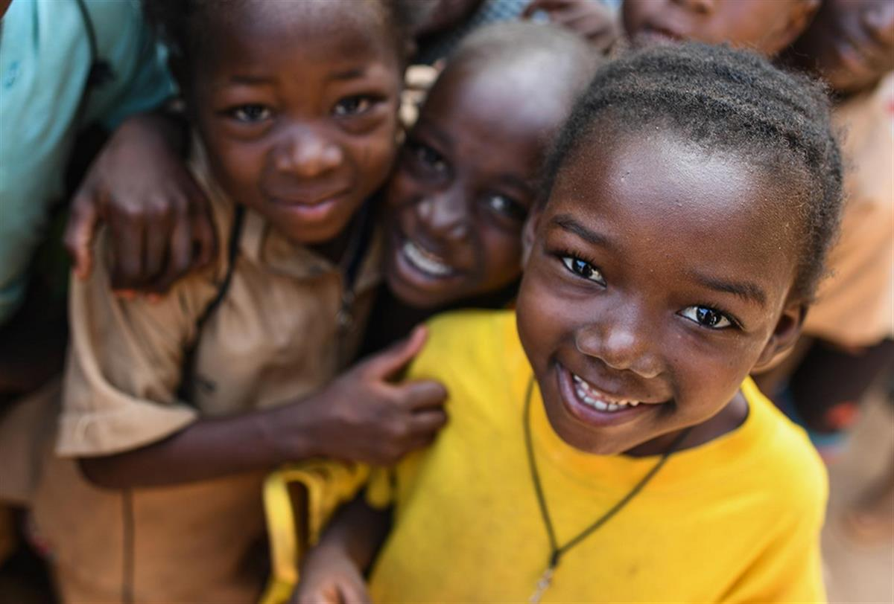

Norway increases commitment to immunisation for the most vulnerable, pledges USD 1 billion to Gavi
- Norway’s substantially increased commitment will go towards helping Gavi protect the most vulnerable, particularly children, against a range of infectious diseases
- One of the original six Gavi donors, Norway has steadily increased its political and financial support for the Alliance and its innovative mechanisms over the last two decades
- Gavi is helping to keep life-saving immunisation programmes running in the face of the COVID-19 pandemic, while working closely with partners like CEPI to ensure equitable access to an eventual vaccine
Geneva, 04 May 2020 – Gavi, the Vaccine Alliance today welcomed a USD 1 billion pledge from Norway. The pledge, which represents a substantial increase from the country’s previous funding of the Alliance, was made at an online pledging event for accelerating development, production and equitable access to COVID-19 vaccines, therapeutics and diagnostics, hosted by the European Commission.
“In order to save lives, vaccines, treatment and diagnostic tools must be made available to all,” said Prime Minister of Norway Erna Solberg. “Gavi plays a vital role in making vaccines, including a COVID-19 vaccine when ready, available to poor countries and vulnerable groups.”
Norway was one of the six original Gavi donors and, since 2001, Norway has contributed close to USD 1.5 billion to Gavi through direct contributions and the funding of innovative mechanisms such as the Advance Market Commitment (AMC) and the International Financing Facility for Immunisation (IFFIm). These mechanisms have helped millions access critical vaccines such as the pneumococcal vaccine and funded the important work of organisations such as the Coalition for Epidemic Preparedness and Response (CEPI). The current pledge of USD 1 billion, of which USD 400 million will go towards funding IFFIm, is an increase from Norway’s previous pledge for the period 2016-2020.
“I want to thank Norway for their decades of global health leadership and their strong, steadfast support of Gavi over the years, which has helped us reach more than half the world’s children with lifesaving vaccines,” said Dr Seth Berkley, CEO of Gavi, the Vaccine Alliance. “Today’s pledge will help us protect the next generation, vaccinating a further 300 million children in the poorest countries against a wide range of infectious diseases, and saving a further 8 million lives over the next five years. That it comes at such an important moment in global health is an acknowledgement of the critical role a fully-funded Gavi will play both in ensuring equitable access to a COVID-19 vaccine, as well as in preventing multiple outbreaks of other diseases by making sure routine immunisation programmes are kept running.”
Over 20 years, Gavi has helped to immunise more than 760 million children, saving more than 13 million lives. Over that time, the Alliance has also worked to strengthen health systems in the world’s poorest countries and establish vaccine stockpiles against serious global health security threats, including Ebola.

Notes to editors
About Gavi, the Vaccine Alliance
Gavi, the Vaccine Alliance is a public-private partnership that helps vaccinate half the world’s children against some of the world’s deadliest diseases. Since its inception in 2000, Gavi has helped to immunise a whole generation – over 760 million children – and prevented more than 13 million deaths, helping to halve child mortality in 73 developing countries. Gavi also plays a key role in improving global health security by supporting health systems as well as funding global stockpiles for Ebola, cholera, meningitis and yellow fever vaccines. After two decades of progress, Gavi is now focused on protecting the next generation and reaching the unvaccinated children still being left behind, employing innovative finance and the latest technology – from drones to biometrics – to save millions more lives, prevent outbreaks before they can spread and help countries on the road to self-sufficiency. Learn more on our website and connect with us on Facebook and Twitter.
The Vaccine Alliance brings together developing country and donor governments, the World Health Organization, UNICEF, the World Bank, the vaccine industry, technical agencies, civil society, the Bill & Melinda Gates Foundation and other private sector partners. View the full list of donor governments and other leading organizations that fund Gavi’s work here.
SOURCE: GAVI
MORE READING: Countries pledge new support to Gavi